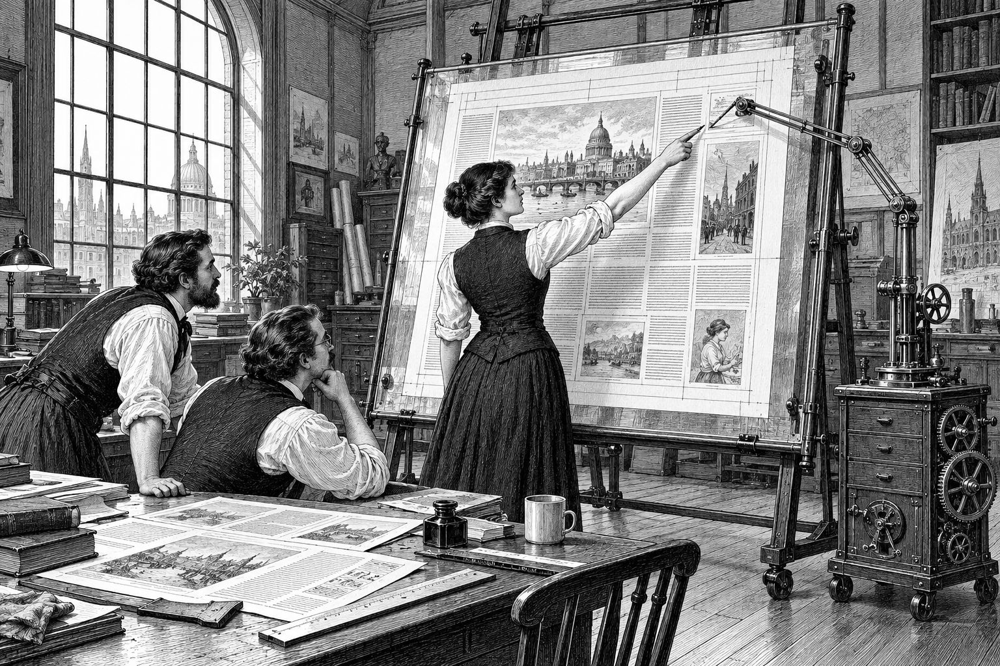
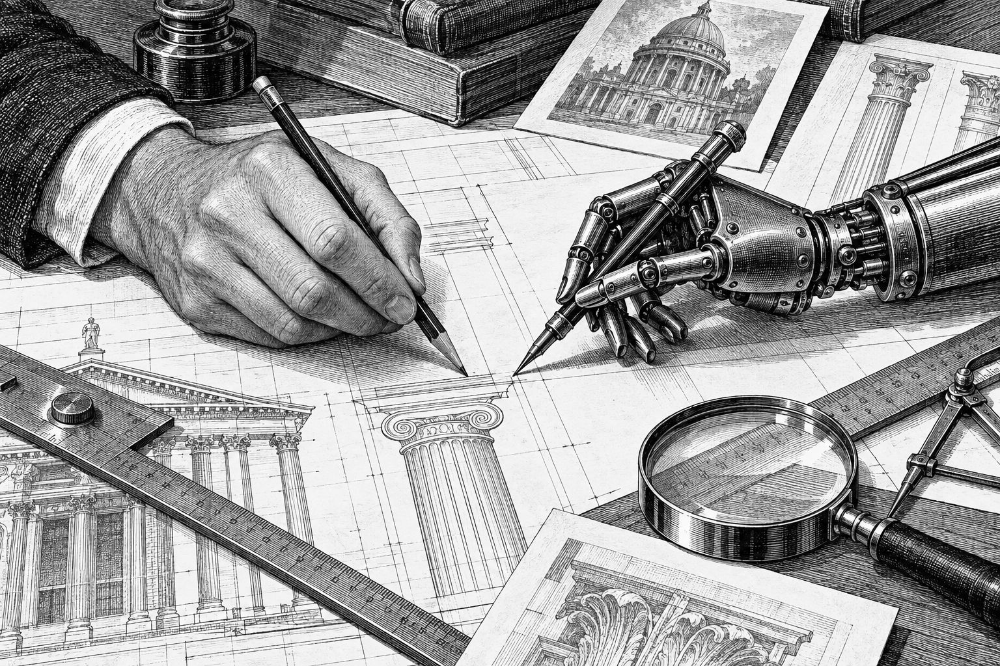

Humans and Code Agents Begin Sharing One Drafting Table
Work Moves Onto a Live Canvas
Designers Point, the Machines Draw, and Both Watch the Page Change as It Happens; Skeptics Ask Who Holds the Pen

Harbor City, Sept. 22 — On the fourth floor of a converted cannery on Mercer Street, the designer Ada Lindqvist spent Tuesday morning doing something that a year ago would have taken her a week. She described a page to a code agent, watched it build the page on a screen they could both see, and when a headline sat wrong she did not write a ticket. She clicked on it.
“That one,” she said. The agent, which had already been told what she clicked, set the headline two sizes smaller and moved on to the next column.
Scenes like it are becoming ordinary in studios and small software shops across the city. For most of the short history of code-writing software, the work happened out of sight: a person typed a request, the machine returned a block of text, and someone had to run it to learn what it did. Mistakes surfaced late, usually after lunch, often after the client had seen them.
The new arrangement puts both parties in front of the same live surface, whether a web page, a slide deck or a diagram. The agent edits the real files, and the surface redraws itself with every edit it makes. Nothing is handed over at the end because nothing was ever out of view.
Pointing Instead of Describing
The change that users mention first is small. On the shared surface, a person can select anything they see, a headline, a photograph, one row of a table, and the agent receives not a vague description but the exact address of the thing selected.
“I used to write paragraphs,” Ms. Lindqvist said. “‘The second blue box from the top, no, the other one.’ Now I point, like I would with an assistant standing next to me.”
The traffic runs the other way as well. The agents in these rooms take pictures of their own work, the same view the person is looking at, and check it before they report that a job is done. Sam Whitlock, a software engineer at a freight company near the harbor, said he stopped asking whether a change had worked. “It shows me,” he said. “Sometimes it shows me that it didn’t, before I notice.”
A Change in Posture
People who work this way describe the difference less in speed than in posture. The human stops reviewing finished work and starts watching work in progress, the way an editor once stood behind a compositor at the stone. They can stop a wrong turn at the third line instead of the thirtieth page, and they can hand over context that a written request would have missed.
“The page is the conversation now. I don’t read what it says it did. I look.”
Marcus Oduya runs Aldine Works, a four-person shop on Canal Row that builds websites for restaurants, theaters and one very particular bookbinder. In August the shop delivered a brochure site that, by Mr. Oduya’s account, would once have taken three weeks of emailed screenshots. It went out in four days.
“The time didn’t go into typing,” he said. “It went into waiting for each other. That’s the part that’s gone.”
The rooms also remember. Several studios described keeping a running record of every step the agent takes, so that a bad afternoon can be wound back like a tape, and a short file of each designer’s standing preferences, which the agent reads before it chooses a typeface or a color. Ms. Lindqvist’s file begins with a line about serifs that she declined to have printed.

The Skeptics
Not everyone is persuaded. Ruth Kessler, who studies how people and software work together at Harbor City Polytechnic, has spent the summer watching designers use the new rooms, and she worries about what the pleasant view leaves out.
“A live preview is very good at showing you what you asked for,” Professor Kessler said. “It is much worse at showing you what you didn’t think to ask. The page can look right while the file underneath is a mess, and the prettier the page, the less anybody opens the file.”
She also cautioned against mistaking attention for understanding. Watching a machine work, she said, can give a person the feeling of having supervised it without the substance. Two of the studios she observed had shipped pages that looked finished and failed for readers using screen readers, a flaw no one in the room could see.
Who Holds the Pen
The studios that use the rooms most heavily have settled, so far, on a simple rule: the agent may draw anything, and only a person may publish. At Aldine Works, nothing leaves the shop until someone other than the person who directed it has read the page, and read the file.
“The question isn’t whether the machine can draw,” Professor Kessler said. “It plainly can. The question is whether the person standing next to it still knows why each line is there.”
Late on Tuesday, the light going amber over the cannery windows, Ms. Lindqvist switched off her screen. The page they had built that morning stayed exactly where they had left it, every step of it on record.
“It will all be there in the morning,” she said. “So will it.”